About Us
A church family serving Cool and the Georgetown Divide.
Our mission
To know Christ and to make Him known.
We pursue this mission through our unwavering commitment to the Word of God, the people of God, and the glory of God. This means faithfully teaching the truths of the Bible, loving and serving both our church family and our wider community, and ensuring that all we do is done for the glory of God.
If you're new to the faith, you're welcome here. If you've been following God your entire life, you're welcome here. If you're not really sure you believe in God at all, you're welcome here.
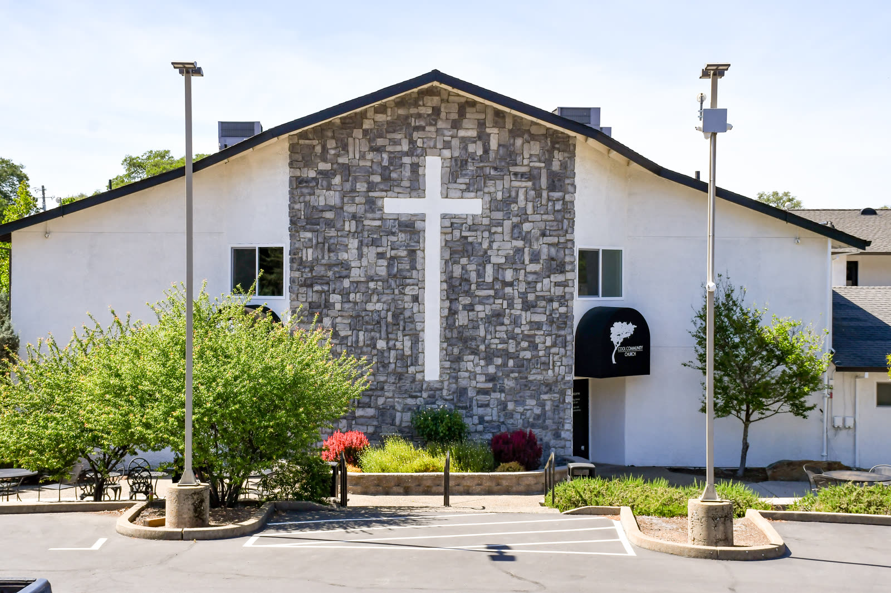
What we're passionate about
Our distinctives
The Word of God
We are deeply convicted that the Bible is God's written, inerrant word (2 Timothy 3:16). That is why we preach through the Bible one book at a time, inviting Him week by week to change us as we submit to His authority.
The People of God
God created us to live in community, and we need one another: for encouragement (Hebrews 10:24), for correction (Galatians 6:1), and to help us hold fast to the gospel (Hebrews 10:25).
The Glory of God
Life is not about us. With John Piper we believe "God is most glorified in us when we are most satisfied in Him," so we seek to be glad in God and spread a passion for the fame of His name.
Our church home
Serving Cool since 1979
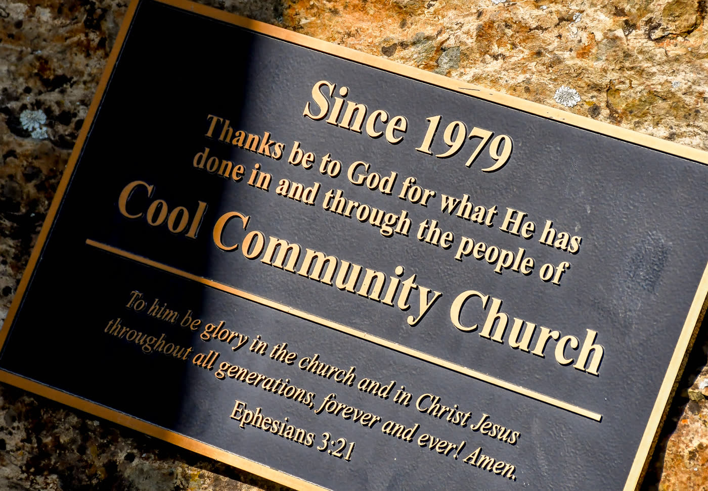
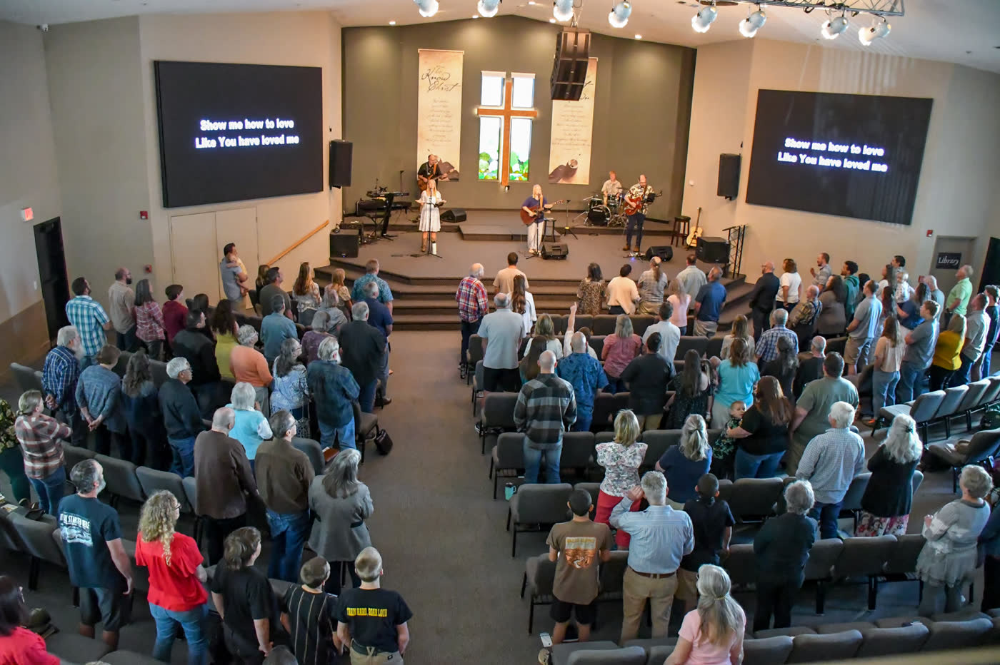
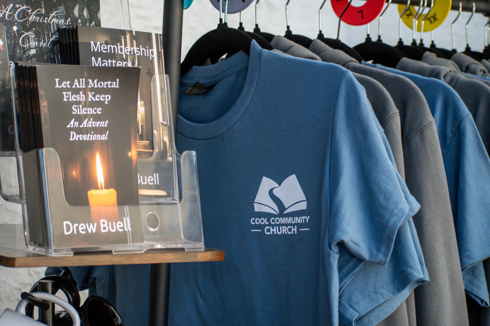
What we believe
All of our teaching and ministry is rooted in and flows out of these biblical doctrines.
God
We believe in one God, Creator of all things, holy, infinitely perfect, and eternally existing in a loving unity of three equally divine Persons: the Father, the Son, and the Holy Spirit. Having limitless knowledge and sovereign power, God has graciously purposed from eternity to redeem a people for Himself and to make all things new for His own glory.
The Bible
We believe that God has spoken in the Scriptures, both Old and New Testaments, through the words of human authors. As the verbally inspired Word of God, the Bible is without error in the original writings, the complete revelation of His will for salvation, and the ultimate authority by which every realm of human knowledge and endeavor should be judged. Therefore, it is to be believed in all that it teaches, obeyed in all that it requires, and trusted in all that it promises.
The Human Condition
We believe that God created Adam and Eve in His image, but they sinned when tempted by Satan. In union with Adam, human beings are sinners by nature and by choice, alienated from God, and under His wrath. Only through God's saving work in Jesus Christ can we be rescued, reconciled and renewed.
Jesus Christ
We believe that Jesus Christ is God incarnate, fully God and fully man, one Person in two natures. Jesus, Israel's promised Messiah, was conceived through the Holy Spirit and born of the virgin Mary. He lived a sinless life, was crucified under Pontius Pilate, arose bodily from the dead, ascended into heaven and sits at the right hand of God the Father as our High Priest and Advocate.
The Work of Christ
We believe that Jesus Christ, as our representative and substitute, shed His blood on the cross as the perfect, all-sufficient sacrifice for our sins. His atoning death and victorious resurrection constitute the only ground of salvation.
The Holy Spirit
We believe that the Holy Spirit, in all that He does, glorifies the Lord Jesus Christ. He convicts the world of its guilt. He regenerates sinners, and in Him they are baptized into union with Christ and adopted as heirs in the family of God. He also indwells, illuminates, guides, equips and empowers believers for Christ-like living and service.
The Church
We believe that the true church comprises all who have been justified by God's grace through faith alone in Christ alone. They are united by the Holy Spirit in the body of Christ, of which He is the Head. The true church is manifest in local churches, whose membership should be composed only of believers. The Lord Jesus mandated two ordinances, baptism and the Lord's Supper, which visibly and tangibly express the gospel. Though they are not the means of salvation, when celebrated by the church in genuine faith, these ordinances confirm and nourish the believer.
Christian Living
We believe that God's justifying grace must not be separated from His sanctifying power and purpose. God commands us to love Him supremely and others sacrificially, and to live out our faith with care for one another, compassion toward the poor and justice for the oppressed. With God's Word, the Spirit's power, and fervent prayer in Christ's name, we are to combat the spiritual forces of evil. In obedience to Christ's commission, we are to make disciples among all people, always bearing witness to the gospel in word or deed.
Christ's Return
We believe in the personal, bodily and premillennial return of our Lord Jesus Christ. The coming of Christ, at a time known only to God, demands constant expectancy and, as our blessed hope, motivates the believer to godly living, sacrificial service and energetic mission.
Response & Eternal Destiny
We believe that God commands everyone everywhere to believe the gospel by turning to Him in repentance and receiving the Lord Jesus Christ. We believe that God will raise the dead bodily and judge the world, assigning the unbeliever to condemnation and eternal conscious punishment and the believer to eternal blessedness and joy with the Lord in the new heaven and the new earth, to the praise of His glorious grace. Amen.
Ministries
Children's Church & Nursery
Nursery through 6th grade, every Sunday during the service.
Kids & Youth →Cool Youth
Junior high and high school, Tuesdays 6:15–8:00 pm.
Cool Youth →Adults
Adult Sunday School at 9:00 am, Home Groups around the Divide, and Empty Nesters (55+).
Get connected →Missions
The missionaries we support around the world and our short-term trips, including Oaxaca, Mexico.
Missions →Crossroads Counseling Center
Christ-centered counseling for adults, youth, children, couples and families.
Crossroads →Our staff
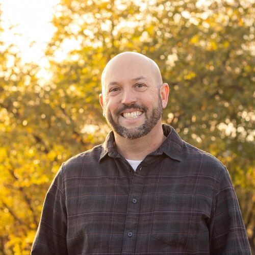
Dr. Drew Buell
Pastor-Teacher
drew@coolchurch.orgRead bio
Drew grew up in a Christian home with wonderful, godly parents. He married the love of his life, Amy, in the spring of 2001. The Lord has blessed them with four children (Micah, Cody, Luke and Ruth).
Pastor Drew is a graduate of The Master's University in Santa Clarita, CA, where he earned a degree in Bible Exposition in 2001. He completed a Master of Divinity at The Master's Seminary in 2005, and a Doctorate of Ministry from the same institution in 2021.
During seminary Drew served as Associate Pastor of Student Ministries and Worship at Pine Mountain Christian Community Church in Pine Mountain Club, CA, then as an Associate Pastor at Emmanuel Baptist Church in Mount Vernon, WA, from 2005 to 2010. He became the Pastor-Teacher of Cool Community Church in 2010.
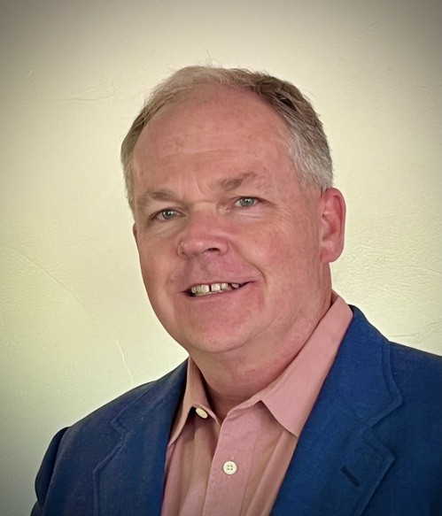
Andy Fisher
Director of Operations
andy@coolchurch.orgRead bio
Andy grew up in the Auburn area in a faithful Christian home. Although he spent much of his teen years running from Christ, the Lord graciously drew him back at age 20 through the influence of godly mentors, who guided him through Scripture and introduced him to the Doctrines of Grace.
Andy married his wife, Shannon, in 1991. They have seven children, three of whom are adopted, and seven grandchildren, and have been part of the Cool Community Church family since 1997. Andy has served in preaching, teaching, Children's Church, AWANA, Men's Ministry and home group leadership, and recently joined the board of elders.
After retiring in 2024 from 37 years of local government service, he joined the volunteer staff as Director of Operations, supporting the church's ministries, caring for its facilities and supporting its people as they grow in their walk with Jesus.
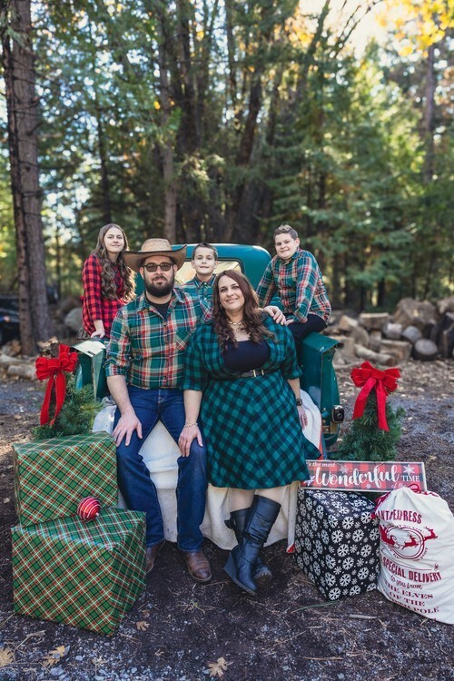
Ross Gilleland
Worship Leader
Read bio
Ross has been leading worship since 1996. He grew up in Sacramento, where he met his wife, Marybeth. Together they have served in worship, youth, production and more. In 2021 they moved to Volcanoville with their three children.
Ross came to Jesus at around 8 years old, after his parents came to know Christ through an invitation to a church volleyball game. He began playing guitar at 11 and leading worship as a teenager. For him, worship is a posture of the heart, and his desire is that the church would come together with one voice to glorify God.
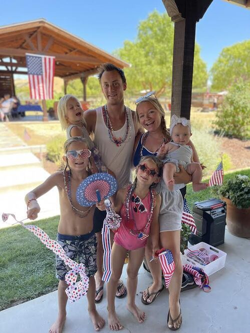
Emily Lomas
Worship Leader
Read bio
Emily is the wife of Jeff and the mom of four: Tucker, Kinsley, Havyn and Selah. She grew up in Santa Cruz, the oldest of seven in a big homeschooling family. Her family moved to Cool in 2011, and she soon joined the worship team at Cool Community, where she met Jeff. They married in 2014.
Emily came to faith at a young age and was baptized at 16 in the American River. Her greatest joy is helping lead God's people in praise, stepping aside so that Christ is magnified through every note and lyric.
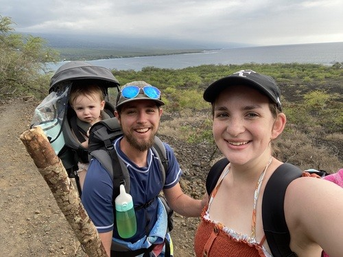
Caleb Dulinsky
Youth Director
caleb@coolchurch.orgRead bio
Caleb grew up in Georgetown in a Christian home and was saved at a young age. His heart for ministry began at Forward Bible Camp, where he served as a cabin leader and summer missionary in high school.
Caleb met his wife, Natasha, while working at the MarVal in Georgetown. They married in 2022 and served two years as interns at Forward Bible Camp, formative years in which his faith grew deeper in the doctrines of grace. God led them to Cool Community Church in August 2024. They live in Georgetown with their daughter, Lia.
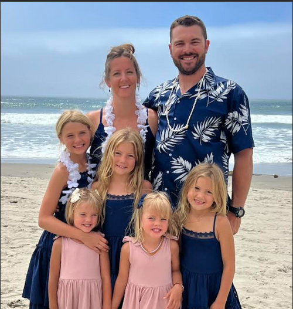
Sarah Costa
Children's Ministry Co-Director
sarah@coolchurch.orgRead bio
Sarah grew up in Placerville in a loving Christian home and received Christ at a young age. She worked with kids at the Boys and Girls Club, as a nanny and as a Big Brothers Big Sisters mentor, and graduated from Sac State in 2013 with a BA in Liberal Studies/Elementary Education before teaching at Silver Fork School.
Sarah moved to the Divide in 2015 and married the love of her life and fishing buddy, Nate. Cool Community Church has been their church home as they welcomed their five daughters: Leah, Jessica, Emma, Megan and Nicole.
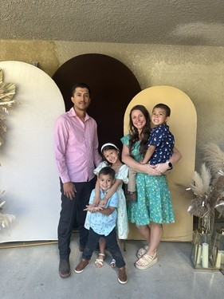
Brittany Jimenez
Children's Ministry Co-Director
brittany@coolchurch.orgRead bio
Brittany's heart is to help children grow in their relationship with Jesus in a way that is fun, engaging, and rooted in God's Word, building a foundation of faith that will guide them throughout their lives.
Brittany and her husband have lived in Cool for seven years with their three children, who have grown in their faith through the children's program. It is a joy for her to partner with families as they nurture the next generation to know and love Jesus.
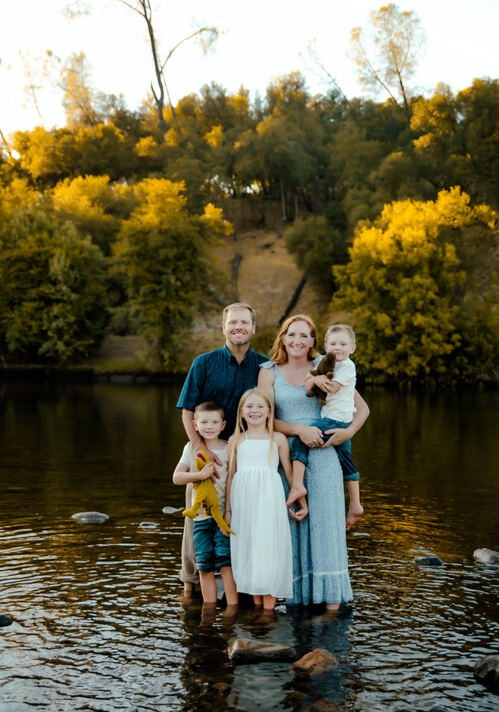
Danielle James
Executive Assistant
danielle@coolchurch.orgRead bio
Danielle is the wife of a State Park Ranger and the mother of three children. Born and raised in Southern California, she moved to Cool in 2018 and soon felt the Lord calling her to Cool Community Church, where she was baptized. She joined the staff in 2023 and is grateful every day to serve in the place where God first drew her closer to Him.
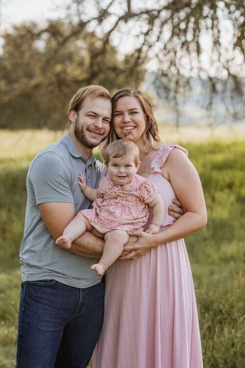
Mia Braun
Youth Admin
mia@coolchurch.orgRead bio
Mia grew up in Greenwood in a loving Christian home and accepted Christ in 2010 at Forward Bible Camp. Her father is a pastor in Garden Valley, so ministry has long been part of her life. She began volunteering in youth ministry in 2016, where she met her husband, Jonah. They married in 2023, began attending Cool Community in 2024, and welcomed their first daughter in 2025.